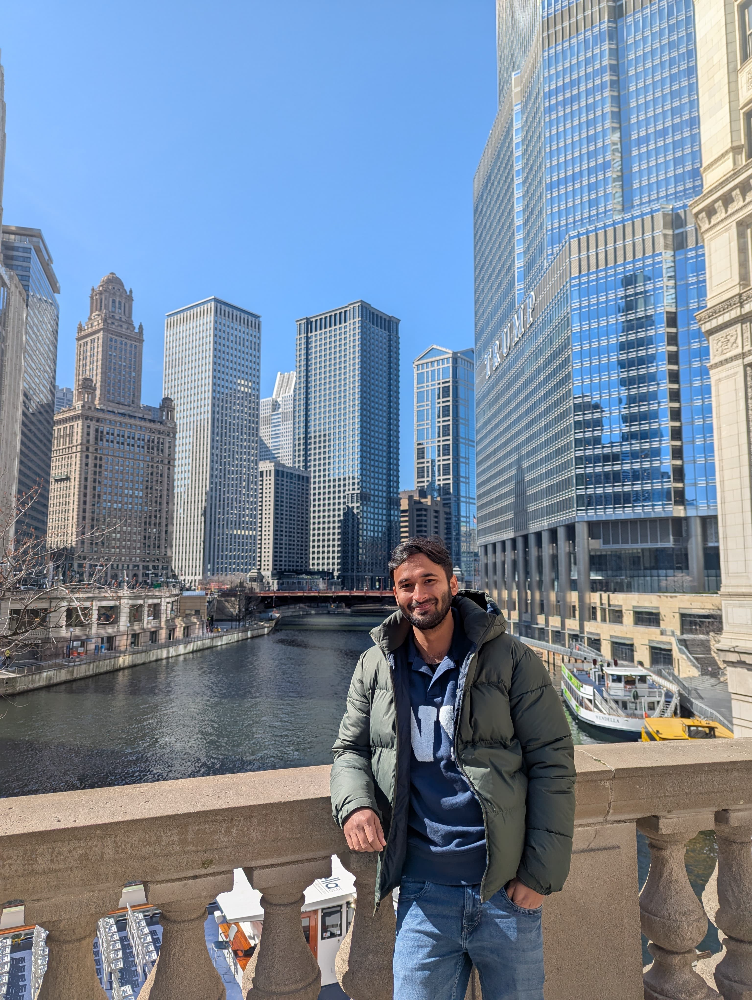

MD NABEEL SABIR
(623) 297-6838 | msabir1@asu.edu | linkedin.com/in/mdnabeelsabir
(623) 297-6838 | msabir1@asu.edu | linkedin.com/in/mdnabeelsabir
I’m Md Nabeel Sabir, a graduate student in Construction Management and Technology at Arizona State University. I am passionate about integrating heavy civil infrastructure with advanced technology facilities to deliver efficient, sustainable, and high-performing projects.
Before joining ASU, I worked on several commercial and residential projects in India, gaining hands-on experience in scheduling, cost tracking, BIM coordination, and project risk management. These experiences strengthened my understanding of precision, safety, and cross-team communication - values that guide my professional approach today.
Currently, I serve as a Graduate Services Assistant at the Del E. Webb School of Construction, supporting coursework in planning and scheduling. This role has deepened my technical foundation in CPM scheduling, Primavera P6, and project controls, while allowing me to collaborate with faculty and assist students in solving real-world construction challenges.
My recent experience as a Project Controls Intern at W.G. Yates & Sons Construction exposed me to large-scale industrial construction through the LGES EV Battery Plant project in Queen Creek, Arizona. Working on cost management, progress tracking, and trade coordination in ProjectSight provided valuable insight into how data-driven decisions improve project outcomes.
With a strong background in civil engineering and project controls, I am driven to contribute to projects that demand technical precision, sustainability-focused thinking, and collaborative execution. My goal is to blend analytical problem-solving with field experience to help deliver smarter, more resilient built environments.